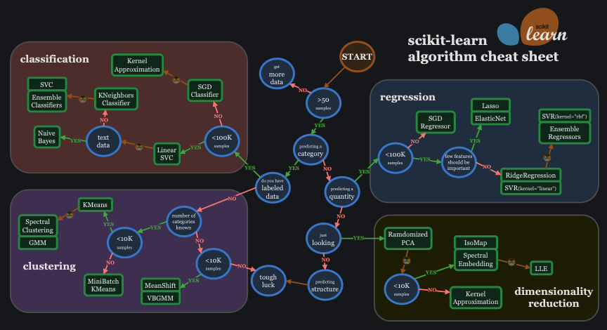

特別講義DS Ch13 機械学習
1 人工知能の歴史
この講義は,文科省の定める｢数理・AI・データサイエンス教育プログラム｣の一貫ですが,統計,機械学習,AI,データサイエンスなどの違いはそれほどはっきりしていません.このことについてはCh2で扱いましたが,ここではAIや機械学習についてもう少し掘り下げてみましょう.
AIはArtificial Inteligence (人工知能)の略語です. 世の中では,様々なものがAIと呼ばれており,
- Automated Instruments (自動化されたなにか)
- Anything IT-related (ITに関連したなんでも)
などのAIという用語の濫用を揶揄する言葉もあります.
AIが最初に研究において提起された1904年のダートマス会議における提案書ではAIの研究を以下のように定義しています.
この研究は,学習のあらゆる側面,あるいは知能のその他の特徴は原則として,機械がそれをシミュレートできるほど正確に記述できるという推測に基づいて進められる.
機械に言語を使わせ,抽象や概念を形成させ,現在人間にしかできないような種類の問題を解決させ,自らを向上させる方法を見つける試みがなされる.
注意深く選ばれた科学者たちがひと夏の間,一緒にこの問題に取り組めば,これらの問題のひとつやふたつに大きな進歩がもたらされると,私たちは考えている.
このように当初のAIの定義によれば,AIは,
- 抽象や概念を形成する
- 現在人間にしかできないような種類の問題を解決し
- 自らを向上させる方法を見つける
ことができる機械であるとされています.
当初のAI研究では,特に2番目の問題解決に商店を当てていました.
例えば, ノーベル経済学賞を受賞した,ハーバート・A・サイモンが人間の問題解決手法を模倣して作った最初期のAIであるGPS (General Problem Solver) 一般問題解決器が有名です.
GPSでは, ｢問題｣を｢現在と目標との差異｣と定義して,以下のように差を分解して差を埋めることでおおよそすべての問題が解決できるとしました.
- 目標：対象Aを対象Bに変換せよ
- 対象Aと対象Bを照合し差Dを見つけよ
- サブゴールDを縮小せよ
- サブゴールA’をBに変換せよ
- 目標：対象Aと対象Bとの間の差Dを縮小せよ
- Dを縮小するのに適した作用子Qを探せ
- 実行可能かどうかテストせよ
- サブゴールAにQを適用してA’を作る
- 目標：対象Aに作用子Qを適用せよ
- Qの条件をAと照合し差を見つけよ
- サブゴールDを縮小せよ
- サブゴールA’にQを適用せよ
(cf.Newell, Allen, and Herbert A. Simon: “GPS, A Program that Simulates Human Thought,”Lernende Automaten, Munchen (R. Oldenbourg, ed.) (1961), Reprinted in Computers and Thought(Feigenbaum and Feldman, eds.) (1963) )
しかし,このような手法は明確に目標と現在を記述可能,その差が計測可能,かつ,差を埋める手段が明確であるようなチェスや迷路などに限定して適用できるものでした.
その他にも,基本的には当時のAIは,｢問題の解決の仕方｣を人間が定義して,それを直接的にプログラムするという手法で開発されています.
その後,AIの発展は以下の年表のような歴史を辿ります.
| AIブーム | 内容 |
|---|---|
| 第1次AIブーム | • 1956年: ダートマス会議でスタート • 汎用問題解決機 (物理現象と理想との差異) • 国際的な解決手法をプログラム • 1960年代にはじめ: 機械翻訳の失敗で収斂 |
| 第2次AIブーム | • 1980年代はじめ: エキスパートシステム、機械翻訳 • 知識の扱いをあきらむ • 1980年代はじめ: 第5世代コンピュータープロジェクト • 1990年代はじめ: 知識導入・商業性で収斂 |
| 第3次AIブーム | • 2010年から現在: ANN(Artificial Neural Network)の復活 • 検査エンジン研究で発達 • ゲームでの成功 (チェス、将棋、囲碁) • パターン認識での成功例 (音声解析、画像解析etc…) |
| 第4次AIブーム | • 現在:生成系AI • 画像・動画・音声 |
(cf.cf. 寺野隆雄,生成系AIの歴史・原理・現状,千葉商科大学 2023年 第1回FD 「生成系AIに関するFD」 ,2023/05/18)
この歴史をすべて概説することはここでは行いませんが,第3次以降のAIブームでは,ダートマス会議における提案での ｢3.自らを向上させる方法を見つける｣に関わるAIの発展に依るものです.
以下,本章ではこの｢自らを向上させる｣機械である,機械学習の概要と,いくつかの事例を扱います. また以降の章では, 機械学習の事例として個別に,クラスタリング,自然言語処理,画像処理などの手法を扱います.
2 機械学習
これまで,回帰などの手法によって,データを用いた予測や判別を行ってきました. 本章で学ぶ機械学習も予測や判別を行うための手法です.
例として,以下の犬と猫の画像について考えてみましょう.

人間であれば,それが犬でどれが猫であるかは簡単に判別可能です. しかし,どのようにして判別しているかを人に説明できるでしょうか?
例えば,上の画像であれば,
- 猫は鼻が赤く,犬は黒い
- 猫は耳が立っており,犬は耳が下がっている
などの違いがあるようにも思えますが,鼻が黒い猫も,耳が立っている犬もいます. 先ほど説明したように,初期のAI開発ではこのようなルールを人間が発見し,プログラしていました. しかし,画像から犬と猫を見分けるルールを明確に定義するのはなかなか難しい作業です.
そこで,AIの開発は,｢機械自体が判別のためのルールを発見する｣ための学習方法をプログラムする方向に進み始めます. そのような手法全般を機械学習といいます.
機械学習の定義は様々ありますが,有名なものに以下があります.
“Field of study that gives computers the ability to learn without being explicitly programmed” ((機械学習とは)コンピュータに、明示的にプログラムされなくても学習する能力を与える学問分野)
Arthur Samuel (1951)
これまでに行ってきた統計学の主な目的は以下のようなものです.
- 記述統計学
- 集めたデータの特徴を代表値やグラフなどを用いて記述する
- 推測統計学
- データを利用してその背景(母集団)を推測する.
いずれも,得られたデータの特徴を知ることを目的としています.
一方で機械学習は, 得られたデータを利用して, 要約・予測・判別などの｢判断｣を機械に行わせることが目的であり, どのようにデータを利用して判断するか自体は機械が自ら学習します.
機械学習には大きく分けて｢教師なし学習(Supervised learning)｣と｢教師なし学習(Unsupervised Learning)｣の2種類が存在します.
教師あり学習
訓練データ(データと答えのペア)を学習して,未知のデータから答えを正しく予測する.
本資料では以下のような教師あり学習を扱います
- 回帰
- 線形回帰
- 一般化線形モデル
- 決定木分析
- k-近傍法
- サポートベクターマシン
- ニューラルネットワーク
- 自然言語処理
- 画像認識
教師なし学習
データの特徴(ベクトル)をもとに,似たものをグループ分け(クラスタリング)します.
本資料で扱う教師なし学習には以下のようなものがあります.
- クラスタリング
- 階層クラスタリング
- 非階層クラスタリング
- 主成分分析
3 教師あり学習
まずは教師あり学習の手法をいくつか体験してみましょう. 教師あり学習と一言にいってもいくつもの手法があり,目的及びデータの種類によって使い分けが必要となります.
 https://scikit-learn.org/stable/machine_learning_map.html
これらの手法からいくつかの手法を試しみましょう.
基本的に本章では, 機械学習用ライブラリscikit-learn(pipやimport時には省略形のsklearn)を利用します. 以下のいくつかのライブラリも含めて pip installしておいてください.
sklearnpydotplusipython
3.1 決定木分析(Decision Tree Analysis)
特定の目的に到達するためのデータの各属性の分岐を作成する手法を決定木分析といいます. 目的変数がカテゴリーデータの場合は,分類木,数値の場合には回帰木と呼びます.
分類性能はそれほど高くありませんが,視覚的に分かりやすく,またモデルを人間が理解しやすいという特徴があります.
代表的なアルゴリズムとして,ジニ不純度を最小化するCART(Classification and Regression Trees）アルゴリズムがあります.
\[ ジニ不純度 = I_G(t) = 1 - \sum_{i=1}^{c}\frac{n_i}{N} \\ c; クラス数, t;ノード, N;サンプル数, n_i;クラスに属するデータ数 \]
CARTは2分木を連続して作成するアルゴリズムです.まず,すべての特徴量毎に,ジニ不純度が最小化される分岐点を探索します.最も分類に影響を与える特徴量の2分木を決定したら,その後それぞれの分岐毎に再度残りのすべての特徴量で2分木を作成し,データが単一のクラスになる,あるいは分割が意味をなさなくなるまで分岐を繰り返してツリーを成長させます.
Graphvizのインストール
scikit-learnを用いた決定木分析では, 最終的な結果として決定木をPDFで出力します. PDFを作成するためのソフトGraphvizをインストールしていないと,以下であつかう決定木分析作成用のプログラムは動きません.以下,Windows,Macそれぞれの指示に従ってインストールしましょう.
Windows
Graphvizの公式サイトから,インストーラをダウンロードしましょう.
いくつか種類がありますが,64bit版の最新のものを選べば基本的には問題ありません.
ダウンロードしたインストーラをクリックして開き,指示に従っていけばインストールは完了です.
途中で, ｢Add Graphviz to the system PATH for all users｣にチェックをいれるのを忘れないようにしましょう.
Mac
Macは,Homebrewを利用します. Homebrewの公式サイトのInstall Homebrew以下にあるshell promptをコピーしてTerminalで実行しましょう.
インストールが完了したら,
brew install graphviz
コマンドを実行して,Graphvizをインストールします.
brew list
コマンドでインストール済みのソフトが確認できればインストールされています.
その他必要なライブラリをインストールします.
pip install pydotplus Ipython sklearn作成した電力データを利用して電力使用量から平日か土日かを当ててみます.
import pandas as pd
from sklearn.tree import DecisionTreeClassifier
from sklearn.model_selection import train_test_split
from sklearn import tree
import pydotplus
from six import StringIO
from IPython.display import Image
# 決定木分析(CART)で,電力データから祝日かどうかを当ててみる.
# データを読み込み
df = pd.read_csv("./data/energy_may_day.csv")
X = df[['Lighting', 'Others', 'Power', 'Air']] #説明変数
y = df['Holiday'] #被説明変数
#トレーニングデータの作成
(train_X, test_X ,train_y, test_y) = train_test_split( X
, y
, test_size = 0.3
, random_state = 666)
#モデルの作成
clf = DecisionTreeClassifier(random_state=0)
clf = clf.fit(train_X, train_y)
#作成したモデルを使って予測
pred = clf.predict(test_X)
#正解率
print(sum(pred == test_y) / len(test_y))
# 可視化
# class_names; 目的変数の名前を入れる
# feature_names; 説明変数の名前を入れるdot_data = StringIO()
tree.export_graphviz( clf
, out_file=dot_data
, filled=True
, feature_names=train_X.columns
, class_names=df['Holiday'])
# 結果がPDFとして保存される graph = pydotplus.graph_from_dot_data(dot_data.getvalue())
graph.write_pdf('result/tree_graph.pdf')
Image(graph.create_png())